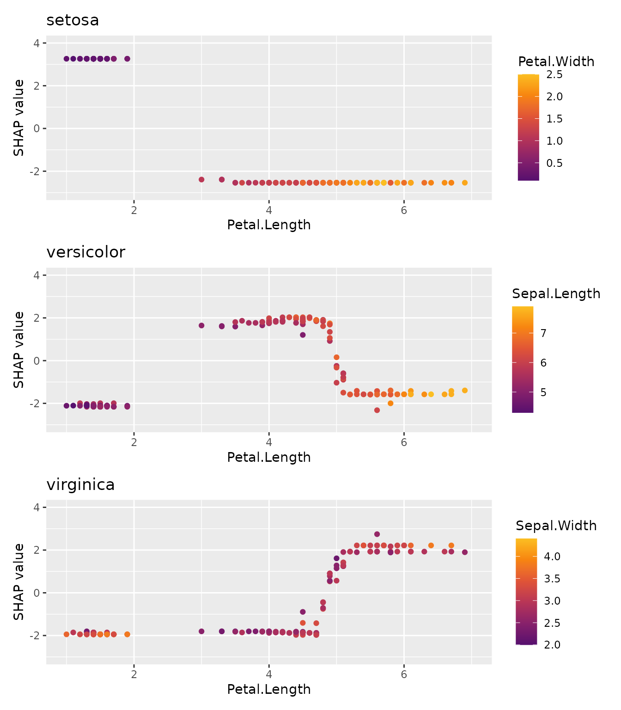
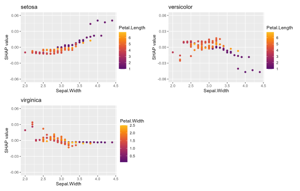
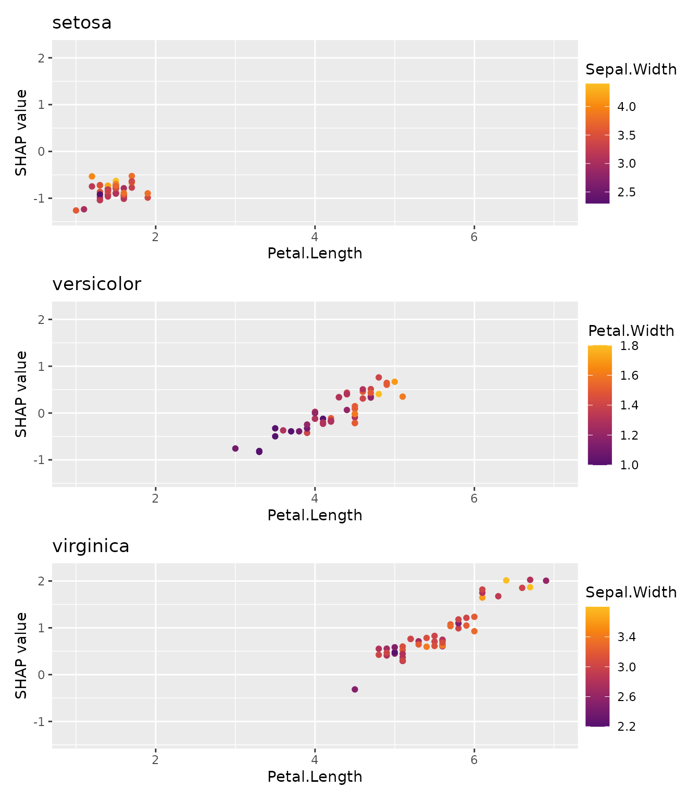

In certain situations, you will find it necessary to work with several “shapviz” objects at the same time:
The {patchwork} package allows to glue together the resulting plots.
To simplify the workflow, multiple “shapviz” objects can be combined together to a “mshapviz” object. This object will care about calling {patchwork}.
library(xgboost)
library(ggplot2)
library(shapviz)
library(patchwork)
params <- list(objective = "multi:softprob", num_class = 3L)
X_pred <- data.matrix(iris[, -5L])
dtrain <- xgb.DMatrix(X_pred, label = as.integer(iris[, 5L]) - 1L)
fit <- xgb.train(params = params, data = dtrain, nrounds = 50L)Note that TreeSHAP produces SHAP values on link scale, i.e., on logit scale.
x <- shapviz(fit, X_pred = X_pred, X = iris)
x
#> 'mshapviz' object representing 3 'shapviz' objects:
#> 'Class_1': 150 x 4 SHAP matrix
#> 'Class_2': 150 x 4 SHAP matrix
#> 'Class_3': 150 x 4 SHAP matrix
# Contains "shapviz" objects for all classes
all.equal(x[[3L]], shapviz(fit, X_pred = X_pred, X = iris, which_class = 3L))
#> [1] TRUE
# Better names
names(x) <- levels(iris$Species)
x
#> 'mshapviz' object representing 3 'shapviz' objects:
#> 'setosa': 150 x 4 SHAP matrix
#> 'versicolor': 150 x 4 SHAP matrix
#> 'virginica': 150 x 4 SHAP matrixHere, we will use better class names as well as identical coordinate systems.
names(x) <- levels(iris$Species)
sv_dependence(x, v = "Petal.Length") +
plot_layout(ncol = 1L) &
xlim(1, 7) &
ylim(-3, 4)
library(lightgbm)
# Model
params <- list(objective = "multiclass", num_class = 3L)
X_pred <- data.matrix(iris[, -5L])
dtrain <- lgb.Dataset(X_pred, label = as.integer(iris[, 5L]) - 1L)
fit <- lgb.train(params = params, data = dtrain, nrounds = 50L)
# "mshapviz" object
x <- shapviz(fit, X_pred = X_pred, X = iris)
all.equal(x[[3L]], shapviz(fit, X_pred = X_pred, X = iris, which_class = 3L))
sv_importance(x, show_numbers = TRUE) +
plot_layout(ncol = 1L) &
xlim(0, 2.25)Since Kernel SHAP is model agnostic, we can get SHAP values on probability scale.
library(ranger)
library(kernelshap)
# Model
fit <- ranger(Species ~ ., data = iris, num.trees = 100L, probability = TRUE)
# "mshapviz" object
x <- kernelshap(fit, X = iris, bg_X = iris)
shp <- setNames(shapviz(x), levels(iris$Species))
all.equal(shp[[3L]], shapviz(x, which_class = 3L))
sv_dependence(shp, v = "Sepal.Width") +
plot_layout(ncol = 1L) &
ylim(-0.025, 0.03)
Here, we want to compare SHAP dependence plots across Species subgroups.
X_pred <- data.matrix(iris[, -1L])
dtrain <- xgb.DMatrix(X_pred, label = iris[, 1L])
fit_xgb <- xgb.train(data = dtrain, nrounds = 50L)
sv_dependence(x_subgroups, v = "Petal.Length") +
plot_layout(ncol = 1L) &
xlim(1, 7) &
ylim(-1.4, 2.2)
In the last example, we used a regression model fitted via XGBoost. How does it compare with a linear regression?
library(kernelshap)
fit_lm <- lm(Sepal.Length ~ ., data = iris)
shap_lm <- shapviz(kernelshap(fit_lm, iris[-1L], bg_X = iris))
mshap <- c(lm = shap_lm, xgb = shap_xgb)
mshap
#> 'mshapviz' object representing 2 'shapviz' objects:
#> 'lm': 150 x 4 SHAP matrix
#> 'xgb': 150 x 4 SHAP matrix